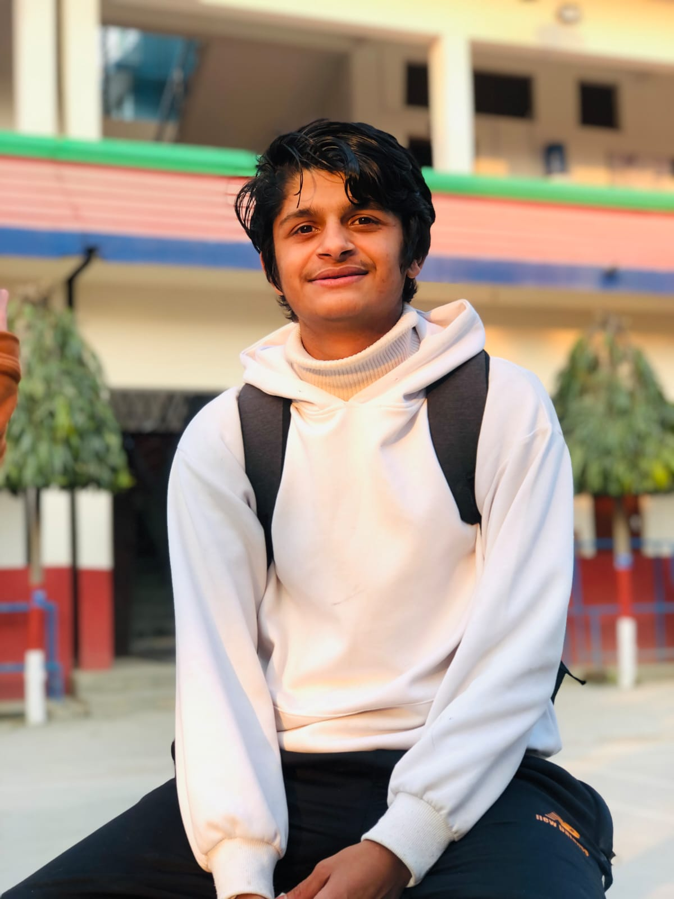

Hey, I'm
AI & Medical Image Analysis
I build deep learning systems that turn medical and real-world images into actionable insight with a growing focus on ophthalmic disease detection, computer vision, and applied machine learning.

Who I am
I'm a Computer Engineering undergraduate with a strong interest in artificial intelligence, medical image analysis, and computer vision. I've built full working systems from a web-based attendance platform to deep learning models for crop disease and retinal disease detection — and I'm continuing to specialize in AI for healthcare, where early, accurate detection can genuinely change outcomes.
Data science is a tool I use to get there. What I care about most is building models that see and reason the way a specialist would, and shipping them as systems people can actually use.
Where I've worked
Applied research and internship experience alongside my degree.
AI Research Intern
May 2026 – August 2026- Trained and evaluated EfficientNet (B1–B4) models for RFMiD multi-disease retinal classification, ARMD screening, and Papilledema/Pseudopapilledema detection under NAAMII's TOGAI (Transforming Global Health with AI) research group
- Performed manual retinal-image annotation (eye laterality, macular and optic-disc landmarks) and organized datasets at the patient level for clinical-grade training
- Contributed trained models to the AI Screening Suite, a web-based platform for ophthalmology, syndrome, and otoscopy screening, and presented weekly progress to supervisor Mahesh Shakya

Research & Cybersecurity Awareness Program
April 2026 – September 2026- []
- []
- []
AI-Powered Crop Disease Detection
A deep learning system built to identify crop disease from leaf images, aimed at supporting early intervention for farmers.
Crop Disease Detection System
Deep Learning · CNN · Computer Vision
A collaborative deep learning project that classifies crop leaf images to detect disease, built and trained with a team on Kaggle and versioned on GitHub. Designed as a step toward accessible, image-based diagnostic tools for agriculture.
Medical Imaging & Retinal Disease AI
Retinal disease detection is my main focus. Alongside it, I work on screening platforms and volumetric medical imaging. Select a project to see the full details.
RFMiD Retinal Disease Classification
EfficientNet · Fundus Imaging
Trained an EfficientNet-based classifier on the RFMiD dataset to detect retinal disease from fundus images.
Retinal Multiclass Disease Detection
Multiclass Classification · CNN
Extended retinal disease detection to a multiclass setting, distinguishing between multiple retinal conditions from a single model.
Papilledema Detection
Deep Learning · Medical Imaging
A classification model focused on detecting papilledema from retinal images, an early indicator that can signal raised intracranial pressure.
SwasthyaAI: Bilingual Screening Platform
PyTorch · FastAPI · Next.js
A bilingual (English and Nepali) web platform for retinal image screening, starting with a diabetic retinopathy module.
3D Medical Image Segmentation
PyTorch · MONAI · 3D U-Net
A volumetric segmentation pipeline for brain MRI (hippocampus), with Dice and Hausdorff metrics implemented from scratch.
Low-level and backend engineering
Projects built from first principles: native code, networking, and secure infrastructure.
C++ Image Processing Library
C++17 · OpenMP · CMake
A multi-threaded image filtering library written from scratch, with manual BMP parsing and convolution filters.
Secure API Gateway
Go · Redis · JWT · Docker
A backend gateway with JWT authentication, Redis-backed rate limiting and an automated CI/CD pipeline.
DICOM Network Node (PACS Simulator)
Python · pynetdicom · SQLite · TLS
A DICOM server supporting C-ECHO, C-STORE and C-FIND, with a relational metadata index and encrypted transport.
Mini Projects
Smaller projects that helped build my foundation in computer vision, data analysis, and full-stack development.
Pothole Detection System
YOLO · Computer Vision
Real-time pothole detection from road images using a custom-tuned YOLO model, deployed with Flask and optimized for edge devices.
Intel Image Classification
TensorFlow · CNN
Classified landscape images into 6 categories with 85% accuracy, using data augmentation and transfer learning.
Fruits 360 Classification
CNN · TensorFlow
92% accuracy across 131 fruit categories using an efficient CNN architecture with aggressive data augmentation.
House Price Prediction (Nepal)
Scikit-learn · Pandas
Linear Regression and Random Forest models with full EDA; feature engineering improved R² by 15%.
Student Performance Analysis
ML · Feature Selection
Predicted academic outcomes with multiple ML algorithms, using SHAP values for interpretability.
Web Attendance System
Flask · MySQL
Full-stack attendance tracking system with an admin dashboard, live clock-in/out, and report generation.
Academic Background
Bachelor of Computer Engineering Graduated
2022 – 2026- Four-year program covering computing systems, programming, data analysis, and image processing
- Built web-based applications and data-driven projects, and implemented algorithms for real-world problems
- Collaborated on team projects, strengthening research and problem-solving skills
Higher Secondary Education (+2 Science)
2020 – 2022- Coursework in mathematics, physics, and chemistry, building a strong analytical foundation
- Developed an early interest in technology, coding, and data analysis